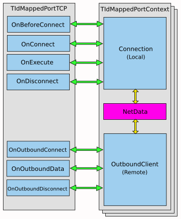

Topic Path: Symbol Reference > Classes > TIdMappedPortTCP Class
   |
   |
TIdMappedPortTCP Class
|
|
|
Implements a port mapping proxy server for TCP connections to a remote computer.
TIdMappedPortTCP = class(TIdCustomTCPServer);
TIdMappedPortTCP is a TIdTCPServer descendant that implements a port mapping proxy server for connections to a remote computer system.
TIdMappedPortTCP listens for connections on a designated port number, and makes an outbound connection to another server using another specified port number. Listener thread(s) defined in the Bindings for TIdMappedPortTCP create new thread- or fiber-based sessions using the ContextClass defined for the server.
TIdMappedPortTCP provides event handler properties specific to the ContextClass for the server (TIdMappedPortContext), such as:
The following diagram illustrates some the interactions for event handlers connections used in the server and client contexts defined in TIdMappedPortContext.

TIdMappedPortTCP is useful in implementing transparent proxy server programs.
|
Copyright © 1993-2006, Chad Z. Hower (aka Kudzu) and the Indy Pit Crew. All rights reserved.
|
|
Post feedback to the Indy Docs Newsgroup.
|

 Hierarchy
Hierarchy